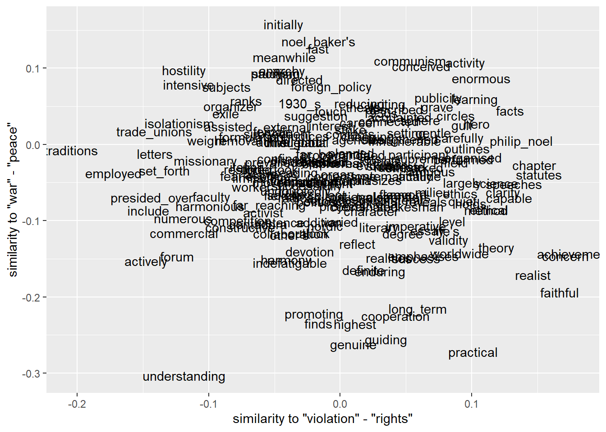
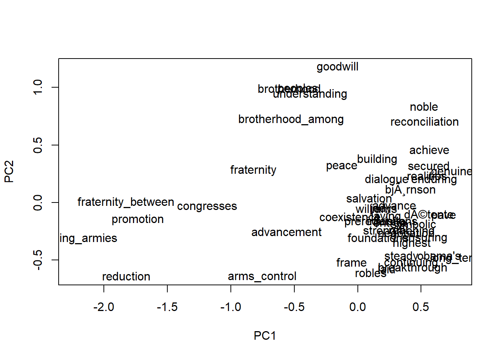
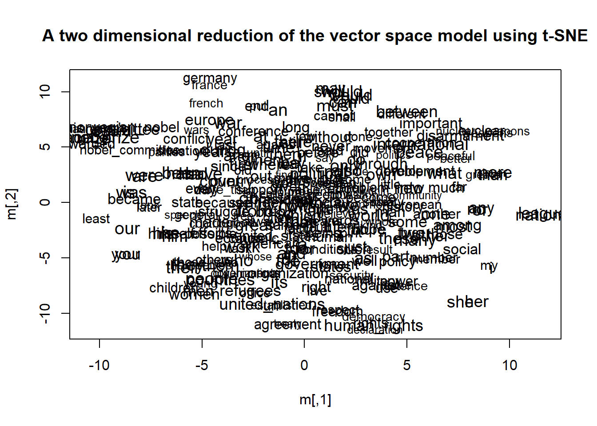

This tutorial follows the vignettes written by Ben Schmidt to illustrate his wordVectors package. See the introductary and exploration vignettes. See, too, his longer blog post on vector space models for the humanities
This tutorial walks through training the model on our Nobel corpus which is a very small corpus for word embedding. This is done more as a demonstration of the wordVectors package than as something likely to give us valuable insight. First we write our Nobel corpus to a text file and save it to our current directory, then we instruct wordVectors to prep this file by tokenizing it, changing all upper cases to lower (we’ve already done this but the package doesn’t know that) and looking for commonly occurring bigrams. Then we train the model, which requires it write to another file in so doing, which we duly indicate.
library(wordVectors)
library(magrittr)
library(tidyverse)
nobel <- read_rds("data/nobel_cleaned.Rds")
write_lines(nobel$AwardSpeech, "nobel.txt")
prep_word2vec(origin="nobel.txt",destination="nobel_prep.txt",lowercase=T,bundle_ngrams=2)
model <- train_word2vec("nobel_prep.txt","nobel_vectors.bin", vectors = 200, threads = 4 , window = 10, iter = 5, negative_samples = 10, force = TRUE)With our model trained, the most obvious thing to do is to look at individual words and see which other words are closest to them in terms of cosine similarity.
model %>% closest_to("peace", n = 15)## word similarity to "peace"
## 1 peace 1.0000000
## 2 prerequisite 0.6288218
## 3 understanding 0.6189000
## 4 noble 0.6155183
## 5 fraternity 0.6109342
## 6 congresses 0.6054665
## 7 secured 0.6038749
## 8 promotion 0.5998970
## 9 intentions 0.5886508
## 10 advancement 0.5875710
## 11 realities 0.5864008
## 12 bjørnson 0.5814551
## 13 brotherhood 0.5744863
## 14 symbolic 0.5661090
## 15 jody 0.5620657closest_to allows for easy vector addition and subtraction. We can, for example, try the classic (and perhaps a bit tired) example:
model %>% closest_to(~"king"+"woman"-"man")## Warning in if (class(object) == "VectorSpaceModel") {: the condition has length
## > 1 and only the first element will be used## word similarity to "king" + "woman" - "man"
## 1 king 0.8065347
## 2 martin_luther 0.6981076
## 3 nelson_mandela 0.6646871
## 4 andrei_sakharov 0.6627515
## 5 carlos 0.6426195
## 6 clinton 0.5954598
## 7 woman 0.5869318
## 8 company 0.5792087
## 9 1983 0.5776339
## 10 mahatma_gandhi 0.5771292Well that didn’t work! But we shouldn’t really be surprised, we’re using a tiny corpus and one not likely to be talking too much about kings or queens. More meaningful for this sort of corpus might be:
model %>% closest_to(~"nuclear" + "peace")## Warning in if (class(object) == "VectorSpaceModel") {: the condition has length
## > 1 and only the first element will be used## word similarity to "nuclear" + "peace"
## 1 nuclear 0.8540356
## 2 peace 0.7461462
## 3 test_ban 0.7265795
## 4 preventing 0.7044267
## 5 testing 0.6952471
## 6 international_physicians 0.6932052
## 7 criminal 0.6845064
## 8 prevention 0.6788094
## 9 ican's 0.6785229
## 10 explosions 0.6710658model %>% closest_to(~"nuclear" - "peace")## word similarity to "nuclear" - "peace"
## 1 nuclear 0.7187029
## 2 atomic 0.4406238
## 3 bomb 0.4258041
## 4 nuclear_weapons 0.4162137
## 5 explosions 0.4070964
## 6 bombs 0.3953769
## 7 test 0.3878737
## 8 testing 0.3784207
## 9 hydrogen 0.3696047
## 10 warfare 0.3645701A rough approximation of Kozlowski, Taddy, and Evans (2019) might be to construct a “cultural” vector (we’ll just use one binary pair and take the difference rather than averaging over multiple pairs) and then measuring cosine similarity to other words – ie to what extent they point in the direct of our vector (in the direction of “peace”) or towards “violence” (which will be a negative number, the lower the more similar).
peace <- model[rownames(model) == "peace"]
violence <- model[rownames(model) == "violence"]
pv_spectrum <- peace-violence
cosineSimilarity(pv_spectrum, model[["treaty"]])## [,1]
## [1,] 0.2675029cosineSimilarity(pv_spectrum, model[["armistice"]])## [,1]
## [1,] 0.04961305cosineSimilarity(pv_spectrum, model[["violation"]])## [,1]
## [1,] -0.1467678cosineSimilarity(pv_spectrum, model[["aggression"]])## [,1]
## [1,] -0.3415268cosineSimilarity(pv_spectrum, model[["war"]])## [,1]
## [1,] -0.1495203All told and for such a small corpus, this seems not half bad.
We might also try to plot this cultural axis using two binary opposite word pairs and then see where other words land in similarity to the difference between the binaries (similar to what we did above). In order to subset our total corpus, we’ll plot the 200 words most similar to “politics.”
violation <- model %>%
closest_to(~ "violation"-"rights",n=Inf)
war <- model %>%
closest_to(~ "war" - "peace", n=Inf)
politics <- model %>%
closest_to("politics", n = 200)
library(ggplot2)
library(dplyr)
politics %>%
inner_join(violation) %>%
inner_join(war) %>%
ggplot() +
geom_text(aes(x=`similarity to "violation" - "rights"`,
y=`similarity to "war" - "peace"`,
label=word))
wordVectors includes multiple nice plotting features. One is via principle component analysis, which reduces many dimensions to a smaller number (here 2) based on the two most informative dimensions running through the original many-dimensional space. Here we’ll try to compare words grouped around “peace.”
peacewords <- model %>% closest_to("peace", n = 50)
peace = model[[peacewords$word,average=F]]
plot(peace,method="pca")
Or we can use t-sne, another dimension reduction method to project our word vectors onto two-dimensional space.
plot(model,perplexity=50)
This definitely shows words that tend to show up together. Perhaps some interesting things here, though historians are probably likely to find graphs like this most interesting compared over time.